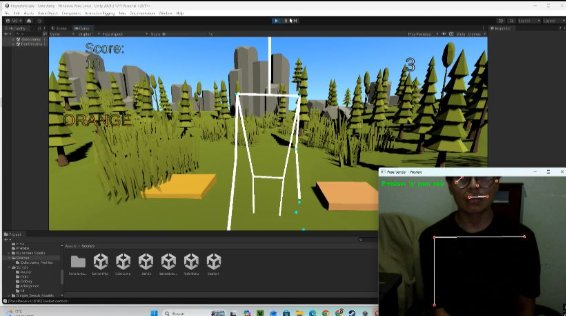
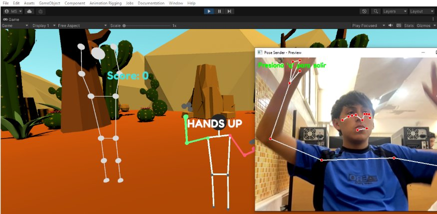
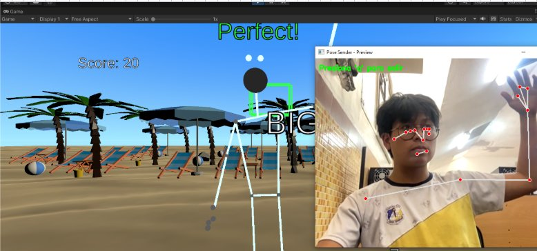
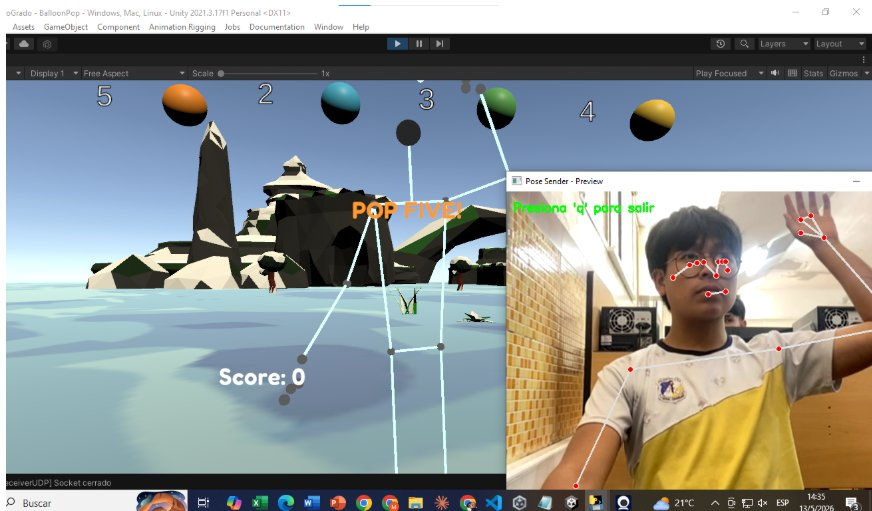
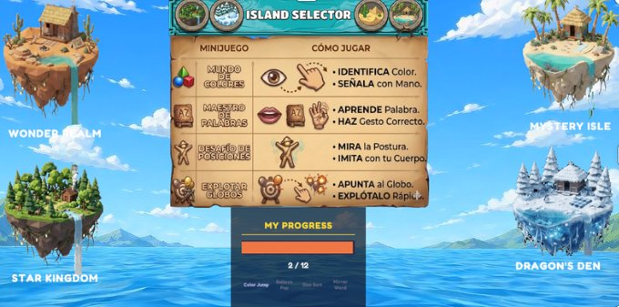
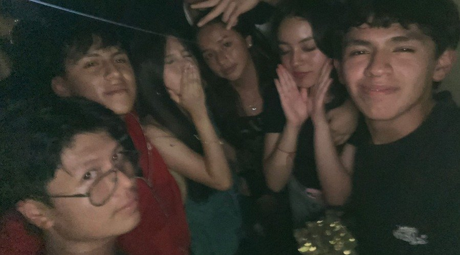

Visión por Computadora
Tu webcam y un sistema de IA basado en MediaPipe detectan 33 puntos de tu cuerpo. Te conviertes en el controlador.
Aprende inglés moviéndote.
Sin teclado. Sin mando. Solo tu cuerpo y tu webcam.
Un juego diseñado para niños de 6 a 10 años · Especial para chicos con TDAH
Biomotion Kids usa la cámara de tu computadora para detectar tu cuerpo en tiempo real. Cada minijuego pide gestos, posturas o movimientos para responder. Aprendes palabras nuevas mientras te mueves. Sin pantallas que apaguen tu energía.
Tu webcam y un sistema de IA basado en MediaPipe detectan 33 puntos de tu cuerpo. Te conviertes en el controlador.
Sesiones cortas. Refuerzo inmediato. El cuerpo en movimiento ayuda a concentrarse en lugar de distraer.
Colores, tamaños, números, posturas y verbos. Cada palabra se asocia a un movimiento. Aprendizaje multisensorial.
4 islas, 4 minijuegos, 12 niveles. Cada logro se queda guardado. Aventura completa para llegar al final.
Cada isla esconde una mecánica única. Cuatro maneras de aprender inglés con todo tu cuerpo.

🌲 Wonder RealmAparece una palabra de color en inglés. Salta a la plataforma del color correcto antes que se acabe el tiempo.

🏝️ Mystery IsleAparece una postura ("HANDS UP", "T-POSE"...). Imítala con tu cuerpo. El sistema valida ángulo por ángulo.

🏖️ Star Kingdom"BIG", "SMALL", "MEDIUM". Identifica el objeto correcto y señalalo con tu mano. Cada acierto suma puntos.

🐉 Dragon's DenAparecen globos con números. La consigna te dice cuál explotar ("POP FIVE!"). Apunta y revienta el correcto.
Descargá el juego desde itch.io, descomprimí el paquete y ejecutá el archivo .exe incluido.
Cualquier cámara web funciona. Posicionate a 2 metros de la cámara. Espacio libre alrededor para moverte.
Ejecutá Pose_sender.exe antes de abrir el juego. Se abre la cámara automáticamente y empieza a detectar tu cuerpo.
Elegí tu isla, elegí tu minijuego. El juego responde a tus movimientos en tiempo real.

Cuatro islas, doce niveles, un objetivo: dominar el inglés.

Construye los minijuegos, el avatar y la integración con MediaPipe vía UDP.
Diseña las islas, los escenarios y todo el universo visual del juego.
Investigó el TDAH como base científica del proyecto y participó como modelo para el desarrollo del sistema de detección de poses.
Disponible en itch.io · $16.09 · Sin anuncios. Solo movete y aprendé.